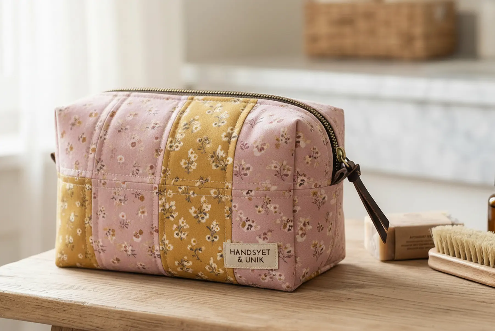
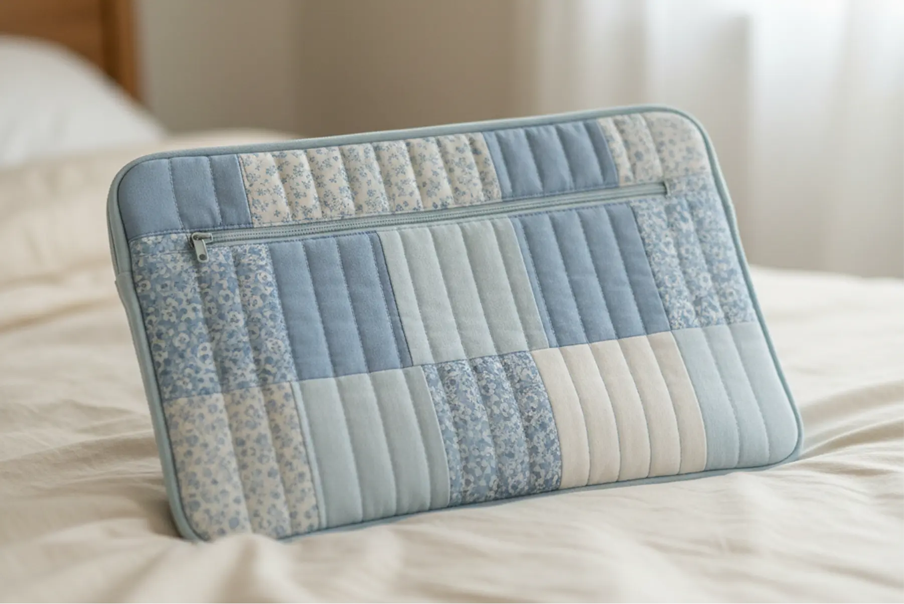
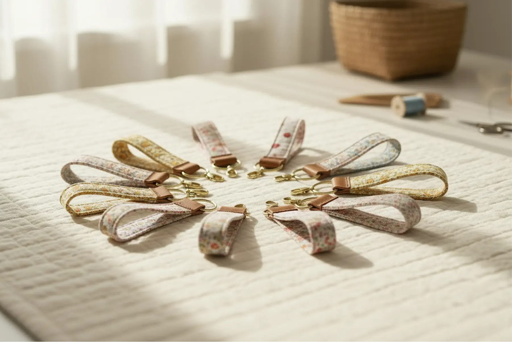
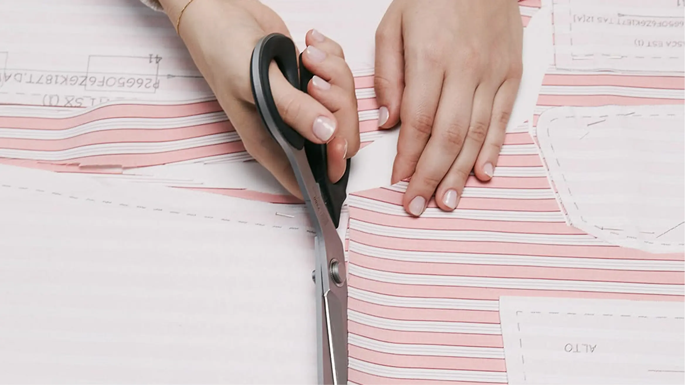
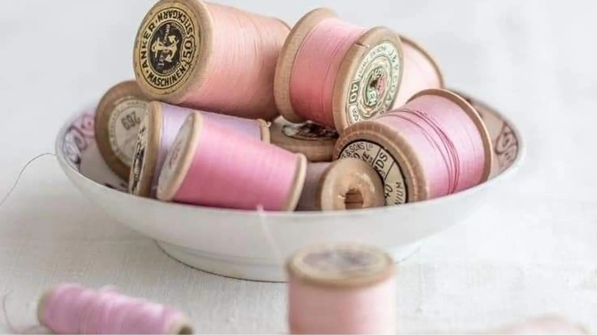

Populære produktkategorier




Find symønsteret til dit næste projekt
På hjemmesiden finder du bl.a. symønstre og vejledninger til mange forskellige syprojekter. Her kan du finde inspiration, lære nye teknikker og få praktiske tips til materialer, tilpasning og finish. Uanset om du er nybegynder eller erfaren, får du hjælp til at komme godt i gang med dit næste kreative projekt.

Fra idé til færdigt syprojekt
Gå på opdagelse i et kreativt univers, hvor der er plads til både enkle idéer og mere udfordrende projekter. Vejledningerne guider dig gennem processen, så du nemt kan følge med fra start til slut. Målet er at gøre det overskueligt og inspirerende at skabe noget personligt med nål, tråd og stof.